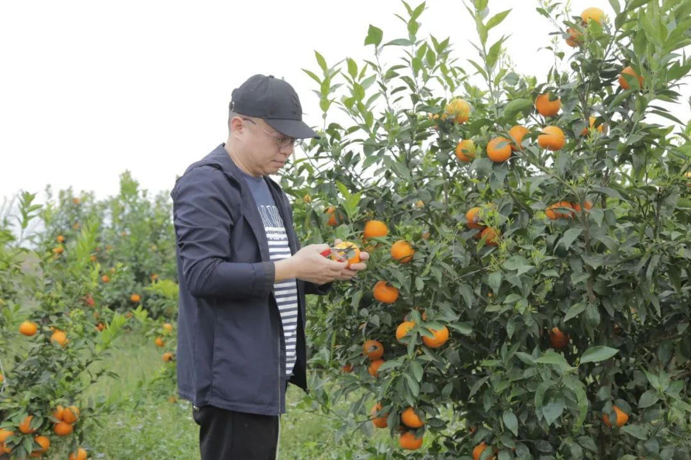
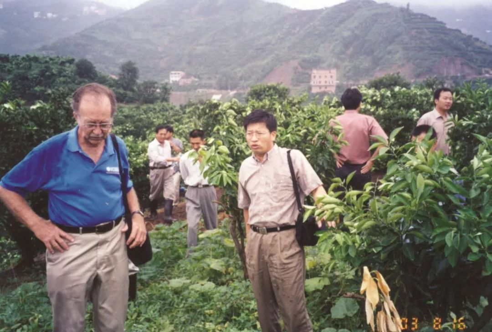
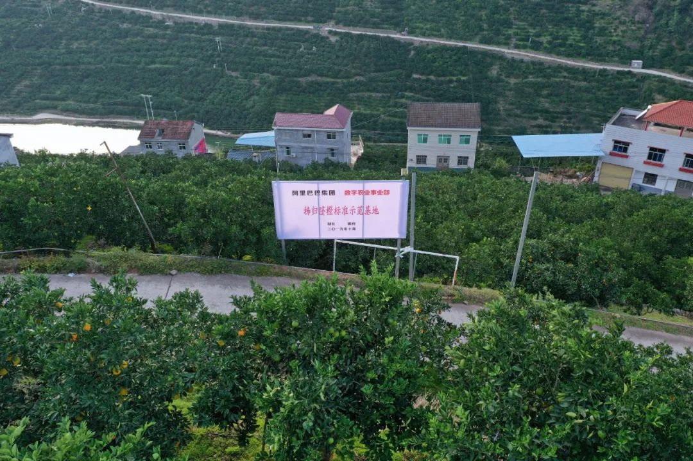

从2万/吨到40万/吨，口罩核心原材料熔喷布价格飞涨之谜
原文链接 备份链接 从2万/吨到40万/吨，短短一个多月的时间，口罩“心脏”熔喷布价格已经上涨近20倍。分析认为，熔喷布产能和口罩产能阶段性不匹配是涨价主因 文 |《财经》记者 杨秀红 张建锋 王颖 陆玲 | 编辑 被称为口罩“心脏”的 …

作者 | 黎明
编辑 | 魏佳
果农周金桥做好最悲观的打算：脐橙要是卖不出去，就把城里的房子卖了。总得活着。
他生活了近50年的秭归县牛岭村，随着湖北省，成了中国新冠病毒疫情版图上颜色最深的那一块。疫区转眼成了禁区，上万斤成熟的脐橙即将烂在地里，卖不出去。
周金桥身后，15万秭归果农，超过17万吨脐橙，都面临同样境遇。扩大种植面积、赚钱、买房、过上和城里人一样的生活，这些大家平时口口相传的心愿，如今也被戴上的口罩掩盖。
当地政府也陷入两难：让果农和工人复工能暂时化解危机，但会增加防疫压力；更重要的是，通往外界的交通阻断，即便复工了，橙子也运不出去。秭归脐橙的供应链全部断裂。
大家必须面对一个矛盾的选择题：眼下的生命重要，可未来的生活呢？

李发山的脐橙已经通过阿里巴巴卖出三分之一
直到有一天，一辆辆收购脐橙的货车停在山野的路边，阿里巴巴牵头修复了这条供应链。
这个春天，如果你吃到了来自湖北秭归的脐橙，也顺便了解一下这些脐橙背后的故事。
***生命与生计***
“卖不掉脐橙，就卖房吧”
过完大年初六，果农李发山突然意识到与往年的不同。“往年春节，脐橙客商的拜年电话响个不停。最近几年市场形势好，很多商贩春节期间就来提前订货。”
今年春节，他的电话异常安静。主动联系一个经常合作的客商，“什么时候能来收脐橙？”对方回复，“我敢收，你敢摘吗？”
对病毒的恐惧笼罩在每个人的心头。能在家就不出屋吧，活过这个冬天。
1月23日，武汉封城，随后，疫情蔓延，整个湖北成为“禁区”。截至昨天，他们所在的宜昌市累计确诊有931例，这个数字接近江西全省确诊的数据。李发山的村子大路小路都封了，农民下果园也得办证。
2月4日，立春，农民们开始慌了：度过这个冬天，接下来怎么生活？
“站在门前，看着漫山的橙子熟了，心里甜蜜蜜的。但今年，看着闹心。”李发山说。
有时候，李发山焦虑到极点，想半夜溜出去，看看果子在树上还能撑多久。有一次，他半夜一点多起床，走到村口又回来了，“担心看到落的果子多，更焦心。”
周金桥也经常失眠，等电话的过程漫长而煎熬，“给客商发去信息，没回音，一直等，一直等，有时候眼睛睁到天亮。”
李发山算了笔账，脐橙卖不出去，得损失20万，更担心的是，秭归脐橙消失一年，明年谁还认？
周金桥也做好了最坏的打算，“脐橙如果卖不出去，就把城里房子卖了，养活一家人。”
秭归的农民大多以种脐橙为生，这里地处湖北省西部，位于三峡大坝库首，三峡库区蓄水后，周围温度降低，形成一个天然的冰箱，每年9月至次年4月，农民都有果实卖，这才有了首个“中国脐橙之乡”。
三峡移民，举世关注。在秭归人世世代代的生活里，与树共生，与草枯荣。二十多年前，很多农民要搬到水位线175米以上的新居，舍不得脐橙树，很多果农像周金桥一样，拉着土，扛着树，爬坡走山路。有人两棵两棵地搬，5公里的旧舍与新居，硬是来回走了3000公里。

20年前，秭归移民将脐橙移栽到新的家园
脐橙树也没辜负村里人。周金桥家从年收入不到2万元，到现在的20万。盖起了几间屋，娶了媳妇，还在县城买了房。他所在的牛岭村，近500户人家都靠树致富。
生活的规划被疫情打破，不能光顾着眼下的生存，还要抬眼看看以后的生活。农民们曾试着和商家一起打破这种阻隔。
“最初，车根本出不了湖北，后来秭归政府支持农产品出去，可运农产品的车出了湖北，到了外省，也下不了高速。线下渠道走不通。”一位湖南的客商跟周金桥想办法，“大车出不去，就快递发货，一件一件寄。”
但货到客商手里，烂了三分之一。
现在的秭归脐橙成熟度较高，以前三天寄到的货，如今穿越层层关卡，要一周。路上，脐橙不断烂掉。
无计可施，无路可走。
***利与义***
“这是大义”
朱道鹏是宜昌誉福天下公司总经理，这位水果服务商也在等电话。
家在深圳，他本可以回家过年。那时湖北省还没封闭，但湖北成重灾区的消息早已传遍。在去往火车站的路上，他半路又折回了宜昌。“放不下公司300多名员工，上千户果农肯定也都在等着我。”
朱道鹏的公司创办8年，核心产品是秭归脐橙，通过阿里巴巴电商平台，将超过百万吨脐橙卖到全国各地。跟着他种植脐橙的农户，种植面积也从原来的两亩、五亩，变成二三十亩……有人从万元户变成了百万富翁。

八年来，朱道鹏将秭归脐橙卖到全国各地
他、公司和农民一起“起来了”。他对秭归，对这些农民都有了感情。
“往年过了初六是开工的日子，但今年初六，是疫情蔓延凶猛的时候，眼见着开工遥遥无期，年前收购近万斤脐橙在仓库里都无法加工，更别说去农户家收购新货了。”
听到电话铃声，他就知道是农户的，“其实谁也没有办法，但得接，（农户）给我打电话，只是要点希望。”
朱道鹏总是告诉他们：“我在想办法，快了。”
盘了一下眼前的困难，物流不通、人员无法流动、不能开工、品控机构找不到，即便以上问题都解决了，谁来卖？谁来买？他自己都走不出小区，又怎么能将万吨脐橙送出湖北？
直到宜昌内可以办证出入，他实在忍不住了，开车去农户果园，从家上高速不到五公里，走了1小时，过了十几道关卡。
2月6日，他看到一条新闻，阿里巴巴大农业办公室发布“爱心助农”计划，尽全力解决全国多地农产品滞销的难题。“转机来了。”
同样看见转机的，还有邓秀新院士。
邓秀新，中国工程院副院长，被称为“脐橙院士”，他最近非常着急，他知道疫情的阻隔对于中国农业的伤害。不光是脐橙，现在两端告急，地里的好农货走不出去，消费者买的蔬菜不新鲜。

2003年，邓秀新（右）陪同前世界柑桔学会主席
阿尔布里哥调研秭归脐橙
2月17日，经中国农业农村部牵头，由邓秀新领衔的全国农业领域30位院士、首席科学家联手阿里巴巴启动“爱心助农计划”，把产销这条赖以生存的供应链接上。
这个时候，自己早已经不想着什么院士，更多是“愿士”，邓秀新说，这时候就应该是志愿者，这是大义。
他的手机在疫情期间也被打爆了。“我对秭归有特殊的感情。这里凝结着我们几代柑橘专家的心血。”从2008年开始，他曾多次实地调查，也是他在当地推广“晚采”技术，保证果农半年都有果实卖。在秭归，许多果农都有邓秀新的手机号码，“疫情我们信钟南山院士，柑橘我们信邓秀新院士。”
邓秀新院士提前判断阿里巴巴在非常时刻进入秭归的意义，“去年秭归脐橙通过网购脐橙销售达到9万多吨，占整个产量的15%-20%。疫情的形势在逐渐好转，到了脐橙大量上市的4月份，只要一放开采摘，然后通过网购，效果会很好。”
当地政府也看到了转机，2月20日，秭归县农业农村局向阿里巴巴发函，正式邀请他们来秭归支援。
杭州的电话也来了。“定了！阿里巴巴要和秭归政府一起，为秭归脐橙打造一条应急的数字供应链，希望您能一起参与、帮忙。”朱道鹏接到电话后，说了不知道多少个“好”。
商人，做生意、获利才是根本。但朱道鹏看着视频中那些捐款，那些逆行者，“必须做贡献，尽我所能。为自己，也为大家。”
*****原则与突破*****
“你就告诉我能不能落？”
要命的问题摆在眼前：怎么运？谁来买？质量怎么保证？
其实直指供应链的三个核心：物流、销售、品控。
也有好消息：2月29日，湖北省首次发布新冠肺炎疫情风险等级评估报告，秭归被列为11个低风险县（市、区）之一。秭归县各级政府开始指导复工，农民与商家可以去地里和工厂采摘、分选与包装，但不能超过15人，且要严格做好防护。虽然和以前的场景没法比，但这至少算特殊时期的“天时”。
地利是，秭归是湖北省电商化水平最高的县域之一。

阿里巴巴数字农业秭归脐橙标准化示范种植基地
2018年，阿里在秭归建立了首个“未来农场”，后来改为数字农业基地。据秭归县农业农村局数据，同年，有1592家电商通过阿里销售秭归脐橙，秭归脐橙单品销售问鼎全国第一。数字化的供应链在当地有比较深厚的积淀。
解救秭归脐橙，阿里巴巴决定先把品控关：品质才是财富。不能坏了秭归的名，更不能伤了消费者的心。
不能人员聚集，启动“云品控”+“异地加工”。
云品控，就是农户采摘、装车、进入工厂，全程由钉钉视频监控。
在现场，水果直径测量圈用来测试果径大小，果皮光滑度及瑕疵视频里肉眼可见，糖度测试仪会跟现在的体温测试仪一样，放在脐橙旁边就能直接显示甜度。一旦发现异常，视频里会叫停核查。
除云品控之外，随机抽检的脐橙，还被快递至阿里数字农业事业部品控中心，由阿里巴巴和第三方专业品控机构来做二次抽检。
为防控疫情作保障，初期筛查过的果子，会在异地加工、分选，果径大小不同，分级就不同，果径大的卖价高，农民收入也能更高。
朱道鹏承担了异地加工的重任，为了争取时间，他放弃了宜昌的加工厂，在当地的郭家坝镇新租了两个厂房，就在当地招工，招不来，就加工资。
另外，他还新增了防护服、口罩、消毒液等防护设备，“整个运营成本高出60%。”
“通过科学防疫，严格品控，湖北出来的水果是安全的，放心吃。” 对于网络流传的湖北水果带病毒的担心，邓秀新院士表示，多地暂停物流，只是担心通过运输水果的人携带病毒。并不是水果或农产品本身的问题。
阿里巴巴内部，大农业办公室调集一切可以协调的力量，解决“谁来买”的问题。
淘宝、天猫、聚划算、数字农业事业部、盒马、菜鸟……一位员工回忆，那种气氛，无异于参加一场战斗，各个群的钉钉声响成一片。电话里说得最多的一句话是“特事特办”。
滞销情况紧急，还真起了火药味，一位员工对同事说：“困难多大家都知道，你就告诉我（这些脐橙）能不能落（地）？”电话那端停顿了五秒钟，“能！”

***公司与公私***
建起湖北省第一条应急数字化供应链
盒马接了，菜鸟也来了。
李发山的内心感觉暖和了许多，橙子能采摘加工了，他一直犯愁的物流这块巨石，总算是在心里落了地。
“一般的车根本进不了村，货车进村要经过十几道安检消毒，快递大部分也都还没恢复。”菜鸟联合当地商家、物流伙伴，与秭归政府一起为脐橙打造了一条出省绿色通道。
2月底，李发山看到货车呼呼地进村了，有的直接开到了当地加工厂，精包装的脐橙被快速装车。
数字农业事业部的员工协调商家，实行统一采购，他们告诉果农，“你们只需要用心采摘好橙子，剩下的事交给阿里巴巴。”

成熟的秭归脐橙通过
阿里巴巴数字农业供应链走向全国
3月2日，首批8万多斤脐橙运出秭归。首批订单中，阿里巴巴数字农业集采6万斤，盒马鲜生在武汉的18家门店集采2.4万斤。打破重重阻隔，用时11天。
李发山的20多亩脐橙，三天里卖掉三分之一，周金桥的脐橙也已经开始采摘出售，“再也不焦虑、失眠了。”
“感谢阿里巴巴，帮我们打通了疫情发生之后脐橙首次出省的通道。”秭归县县长杨勇表示。
这也是阿里针对农产品，在湖北省打造的第一条应急数字化供应链。它的样本意义在于，疫情当下，在全国更多的地方，这种模式都可复制，可持续。
中国物流学会特约研究员杨达卿认为，从采购、包装、储运、分销到末端配送的数字化供应链，全流程服务保障，能为秭归脐橙这类区域特色农产品走向大市场提供一条全新的高速公路。“阿里作为开放性数字供应链平台，具有数字零售、数字金融、数字物流等全生态链的资源，利于把数字供应链的全链路协同做到最优化。”
据悉，包括物流在内的供应链成本主要由阿里巴巴承担，客商分摊一部分物流成本。为了支援秭归脐橙销售，这家公司选择放弃短期的商业利益。
在2月的第四季度财报电话会议上，阿里巴巴CFO武卫介绍，“疫情对于三月份这个季度的影响有两方面，一是疫情直接的影响，二是我们给予商家的扶持和资助的项目。”总体上看，疫情预计对下季度的营收造成负面影响。
马云在阿里巴巴20周年年会上说，“阿里从20年前到现在，我们所有重要的决定都跟钱无关。我们都思考我们所做的决定，我们所投入的技术，我们所做的产品是否可以解决社会的问题。”
大货车开远了，有农民朝货车挥手。
忙前忙后的朱道鹏感慨，不管冬天多阴冷，春天总会如期而至。
*题图来源于视觉中国。


疫情期间，你觉得水果价格如何？
欢迎在评论区留下你的评论。我们会在点赞前三（超过20个，统计周期为7天）的评论里挑选一位网友，送出网易云黑胶会员季卡一张。原创文章转载请点击公众号菜单“转载合作”。
一手资讯/硬核报告/每日红包/线下活动！就差你了！快加微信rancaijing01回复“读者”一键上车！


原文链接 备份链接 从2万/吨到40万/吨，短短一个多月的时间，口罩“心脏”熔喷布价格已经上涨近20倍。分析认为，熔喷布产能和口罩产能阶段性不匹配是涨价主因 文 |《财经》记者 杨秀红 张建锋 王颖 陆玲 | 编辑 被称为口罩“心脏”的 …
原文链接 备份链接 燃财经（ID:rancaijing）原创 作者 | 韩冰 编辑 | 阿伦 疫情“黑天鹅”一出，企业现金流骤降，不少线下业态面临生存考验，教育机构首当其冲。 近日，教育培训机构“优胜教育”被曝拖欠薪资，部分员工遭遇裁员。 …
原文链接 备份链接 《创新经济战疫计划》，是燃财经在新型肺炎疫情期间推出的特别栏目，关注创新经济企业遇到的新难题、商讨应该采取的新对策，希望能够帮助中小企业一起战胜挑战、把握机会。 作者 | 唐亚华 编辑 | 魏佳 疫情下的健身行业，正在 …
原文链接 备份链接 岛语 非常时期，武汉成了全国人民挂念、祈福的城市。封城后，武汉人民的真实生活是什么样？ 武汉在发生哪些变化？ 正和岛自1月26日起特别推出“叶青专栏”。叶青是一位定居武汉40年的市民，也是一名学者和官员。在过往多期的专 …
原文链接 备份链接 一些防疫措施影响到部分零部件加工生产，部分跨国公司订单中断。供应链较长且分工复杂的汽车和电子制造行业，压力更加明显。但此次疫情并不会对供应链产生可以衡量的长期影响。中国花30年打造的供应链， …